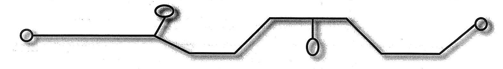

Haromszek, nr. 5960 din 08.04.2010
Farkas Reka
Relații multiculturale și interetnice / Dialog în impas
Dezbaterea intitulată Relații interetnice și multiculturalism pe Pământul Secuiesc, organizată de extensia din Sfântu Gheorghe a Universității Babeș-Bolyai și de Asociația pentru Comunitate nu a putut urni problema din punctul mort în care se află. Mulți au considerat promițătoare prezența, în calitate de conferențiar invitat, a lui Cătălin Avramescu, filosof, politolog, consilier al președintelui statului Traian Băsescu, însă Avramescu a vorbit mai degrabă de modernizarea României și necesitatea reformării sistemului electoral și nu despre problemele care îi leagă sau îi separă pe românii localnici și pe maghiari.
Sala Gabor Aron a bibliotecii județene a fost populată în primul rând de români, fiind prezenți în primul rând reprezentanții Partidului Democrat. Au fost prezente de asemenea câteva persoane îngrijorate pentru națiune, cum ar fi de exemplu Ion Lăcătușu. Maghiarii au fost reprezentați de primarul Antal Arpad, rolul de moderator revenindu-i lui Dan Manolăchescu și lui Cziprian Kovacs Lorand. Cătălin Avramescu a insistat cu argumente asupra sistemului electoral uninominal. Antal Arpad le-a atras atenția românilor din sală asupra faptului că cei care luptă împotriva legii privind minoritățile își ridică glasul împotriva intereselor românilor de pe Pământul Secuiesc, dat fiind faptul că această normă juridică asigură - în privința tuturor comunităților care trăiesc în minoritate - dreptul de implicare în problemele culturale și educaționale. Poate că acest lucru l-a revoltat pe Ion Lăcătușu, care l-a rugat pe Avramescu să-i transmită seria de plângeri, enumerându-i problemele românilor asupriți pe Pământul Secuiesc. Antal Arpad a încercat să justifice faptul că românii primesc un sprijin corespunzător din partea orașului și că aceștia nu au fost dezavantajați nici în privința denumirilor de străzi, dat fiind faptul că străzile principale poartă în continuare numele unor personalități maghiare. Dan Manolăchescu a constatat cu tristețe că politicienii vorbesc despre probleme politice, nu există o atitudine empatică în privința abordării reciproce a problemelor și astfel nu există șanse de multiculturalității. Ar fi nevoie de sărbători și manifestări comune. Ar fi nevoie ca asemeni Tirolului de Sud, prezența reprezentantului celeilalte națiuni să fie cel puțin la fel de importantă în cadrul unor acțiuni ca și prezența propriului reprezentant. Dezbaterea nu a găsit posibilități de soluționare și a reieșit că politicienii români și oamenii de rând consideră că viitorul constă în dispariția UDMR și în înscrierea maghiarilor în partidele românești. Viziunea multiculturală unilaterală a fost oglindită de faptul că discuțiile referitoare la căutarea punctelor comune s-au desfășurat exclusiv în limba română.

Haromszek, nr. 5946 din 01.04.2010
Csinta Samu
Cine este interesat de legea învățământului?
Prima indignare a fost generată de faptul că dezbaterea publică a proiectului de lege a învățământului a fost limitată la o perioadă de două săptămâni. În Trei Scaune au existat școli în care membrii comunității pedagogilor nici măcar nu au dezbătut această temă. Acest lucru a fost motivat prin justificări de genul: oricum nu suntem ascultați!
La forumul de dezbateri, organizat exclusiv în interesul prezentării punctelor de vedere al părinților, din comunitatea de părinți formată din 7000 de persoane, s-au prezentat doar 70 de persoane. Poate că printre acestea s-au aflat cel mult zece părinți care au parcurs textul proiectului de lege.
Ar fi bine de aflat câte propuneri de modificare s-au formulat în privința proiectului de lege a învățământului din țară. România va avea oricum o nouă lege a învățământului, cu noi elemente care pot fi apreciate sau criticate, cu elemente care pot fi finanțate sau care sunt nefuncționale. Atunci când vom bate cu pumnii în masă din cauza absurdităților legii, le reamintesc celor care au preferat să rămână acasă starea de paralizie a vieții publice, sesizate în perioada dezbaterii publice. Acea stare în care majoritatea a pierdut din nou posibilitatea modelării problemelor noastre comune și a asumării responsabilității civile.
Haromszek, nr. 5946 din 01.04.2010
Fekete Reka
Dezbatere despre proiectul privind învățământul / Si bune și rele
Dezbaterea publică de două săptămâni a proiectului de lege a învățământului a luat sfârșit, însă nu se știe cât timp alocă ministerul pentru includerea propunerilor înaintate și când va ajunge norma juridică pe masa Parlamentului. Un lucru este: mulți nu s-au pronunțat pe marginea cu proiectului, deoarece în ultimii cinci ani, fiecare ministru și-a elaborat propriul proiect de lege și deși s-au adoptat multe propuneri de modificare, nici un proiect nu a devenit lege.
Noul proiect de lege reprezintă în general un pas spre crearea autonomiei școlilor, însă limitează posibilitatea bisericilor de a înființa școli. În legătură cu proiectul de lege care reglementează învățământul public și statutul juridic al pedagogilor le-am adresat câteva întrebări pedagogilor, părinților, directorilor de școli și din răspunsuri a reieșit că pe cât de haotică este legea, pe atât de diverse sunt și opiniile.
Autonomia școlară are preț
Keresztely Irma, inspector școlar general: acest proiect de lege ar oferi posibilitatea realizării unei descentralizări reale la nivelul școlilor, însă acest lucru depinde de cum vor fi metodologiile. În opinia mea este un lucru bun faptul că școlile vor fi cele care îi vor angaja pe profesori, deoarece prin acest fel crește responsabilitatea față de calitatea învățământului. Un aspect negativ îl constituie faptul că anumite articole și capitole conțin contradicții și în cazul în care de propuneri se va ține cont doar superficial. Fără reformularea unitară a întregii legi, aceasta va fi ca și o capcană, dat fiind faptul ca actuala variantă a proiectului nu poate fi aplicată din punct de vedere al finanțării.
Koman Laszlo, profesor de geografie, Grup Scolar Kos Karoly din Sfântu Gheorghe: În opinia mea, proiectul de lege nu ține cont de interesele elevilor și nu este adevărat că noul sistem de evaluare ar fi mai puțin stresant pentru elevi. Consider important faptul că istoria și geografia pot fi studiate de copii în limba lor maternă.
Nagy Edit, directoare de grădiniță, Grădinița Bedenek Elek din Sfântu Gheorghe: Nu suntem de acord ca grupa pregătitoare să fie inclusă în învățământul școlar.
Rapo Arpad, pedagog de specialitate, Grup Scolar Kos Karoly din Sfântu Gheorghe: pe mine mă deranjează faptul că învățământul de specialitate se degradează din ce în ce mai mult.
Vasile Prahovean, director, Scoala Generală Nicolae Colan din Sfântu Gheorghe: Această lege amplifică mai degrabă relațiile de subordonare. În opinia mea, adevărata descentralizare constă în transformarea instituțiilor centrale - cum ar fi inspectoratul școlar - în grupări de consultanță, de realizare de proiecte , nu să se ocupe de verificarea activității școlilor.
Kovacs Attila, director, Școala Generală Tokes Jozsef din Malnaș: In multe sate, o problemă o constituie asigurarea spațiilor necesare pentru clasele O și clasele a IX-a și asigurarea pedagogilor care urmează să predea în aceste școli.
Nagy Sandor, director, Scoala Generală Fejer Akos din Micfalău: In cazul nostru nu ar fi probleme cu sălile de clasă, însă ar fi probleme cu profesorii. Mulți profesorii vârstnici nu au pregătirea necesară pentru a putea preda în clasele a noua.
Tulit Attila, părinte, Sfântu Gheorghe: In ceea ce privește această lege cadru, probleme o constituie faptul că înaintea redactării textului proiectului nu a existat un model, nu s-a făcut o muncă de cercetare în domeniu și nu se știe dacă prevederile acesteia pot fi sau nu aplicate. Deși copiii pot studia istoria și geografia în limba maghiară, manualele sunt traduse din limba română. O serie de probleme sunt încă nelămurite: ce anume și în ce mod li se predă copiilor noștri.
Wolf Emil, părinte, Sfântu Gheorghe: Consider că întregul sistem are un caracter nesigur, ceea ce este în detrimentul copiilor și în detrimentul părinților. Elevii trebuie să știe pe ce anume să conteze înainte de fiecare ciclu.
Vass Maria Izabella, părinte, președintele Asociației Părinților din Sfântu Gheorghe: Asociația noastră a formulat câteva propuneri de modificare, deoarece am considerat important să ne exprimăm punctul de vedere.
Hargita Nepe, nr. 72 din 14.04.2010
Burus Janos Botond
Păstrarea identității zilnic de la 9:00 la 17:00
Forumul Civic al Românilor din județele Covasna, Harghita și Mureș (FCRCHM) s-a adresat Departamentului pentru Relații Interetnice al Guvernului. Pe organizația civică o macină curiozitatea cu privire la câți bani cheltuie din buget Fundația Communitas, coordonată de UDMR pentru sprijinirea minorităților, respectiv pentru ce și unde se duc acești bani.
În ceea ce mă privește le doresc sănătate pentru acest demers! Îmi pare rău dacă marele elan va fi tăiat de faptul că, Communitas nu se mai ocupă de distribuirea fondurilor bugetare alocate minorității maghiare. Această Hotărâre de Guvern a apărut în luna februarie, în Monitorul Oficial, astfel că, suma nu mai intră în contul Fundației, ci al UDMR.
Deci prima parte a întrebării a căzut. Bineînțeles, se poate întâmpla ca președintele Forumului, Ioan Lăcătușu să fie curios de datele de dinainte de 2010. În acest caz, îi propun să-l pună în genunchi, pe boabe de porumb pe referentul său de presă. Pe site-ul organizației se poate citi traducerea acelor articole preluate din presa maghiară din țară, care - conform gustului traducătorului - au un ton naționalist sau antiromânesc. Dacă acesta ar fi fost mai atent ar fi putut spune: șefu, mai degrabă să organizăm încă o mare adunare la Toplița și să nu ne mai ocupăm de Communitas, deoarece problema banilor este cercetată de ani de zile de către jurnaliștii maghiari, bătând încă pasul pe loc: cine a beneficiat de sprijin, felicită Communitas-ul, cine nu sau cine a primit mai puțin, îl critică.
Dar să revenim la esența problemei: de fapt, forumul românilor din Ținutul Secuiesc nu ar dori răspunsuri, ci bani. În opinia lui Lăcătușu există o mare diferență între finanțarea bugetară a proiectelor comunității române, respectiv maghiare, de aceea, organizația sa solicită un sprijin conform modelului Communitas, pe care îl poate aloca pentru programele de păstrare a identității românilor din Ținutul Secuiesc.
Personal, mă îndoiesc că această idee este realizabilă. Pentru aceasta am și un argument logic: până acum Fundația Communitas a beneficiat de sprijin prin intermediul cadrului alocat pentru minorități, aprobat oficial. Din 1994 încoace, minoritățile naționale beneficiază de astfel de beneficii, de exemplu, în acest an, au fost alocate 70 de milioane de lei pentru organizațiile de reprezentare, din care, minorității maghiare i-a revenit 15 milioane, respectiv 20% din suma totală. Dacă Forumul Civic al Românilor din județele Covasna, Harghita și Mureș dorește să obțină sprijin bugetar după acest model algoritmic, o condiție indispensabilă este asumarea de către românii din cele trei județe a statutului oficial de minoritate. Să-i dea bătaie - doar că eu am crezut până acum că, luptă exact împotriva contrariului.

Szekely hirmondo, nr. 38 din 13.04.2010
Nagybaczoni Molnar Ferenc
Cum arată de fapt stema și drapelul secuiești?
Cu excepția vechii steme, pe Pământul Secuiesc nu au fost utilizate, până de curând, simboluri naționale diferite de cele ale restului maghiarilor. Dezideratele românești - care insistă asupra ignorării stemei și drapelului maghiare - și anumite contradicții maghiaro-maghiare au fost poate cele care au contribuit la creșterea importanței ideii înființării unor simboluri secuiești de sine stătătoare. Din păcate, activitatea ideologică a realizării (neoficiale) a acestora i-a revenit exclusiv Consiliului Național Secuiesc, acesta fiind nevoit să ofere o soluție.
Procesul care a ajuns până în punctul acesta este cunoscut în linii mari. CNS a adoptat deja două hotărâri pe această temă - ultima în 2009-, susținând de fiecare dată proiectul de stemă și drapel propus de Konya Adam. Trebuie menționat că propunerea înaintată într-un moment prost și nesusținută teoretic într-un mod adecvat, nu a putut avea rezultate satisfăcătoare. Majoritatea celor cu drept de vot nu au dispus de nivelul de cunoștințe în heraldică și vexilologie care se impune în astfel de momente, în timp ce loialitatea prost înțeleasă față de conducere i-a determinat pe delegați să adopte propunerea fără a aduce critici mai serioase.
Stema astfel adoptată este, în linii generale, aproape identică cu cea donată de regele Sigismund, însă caracterul reprezentării ei diferite pune destul de mult sub semnul întrebării legitimitatea acestei modificări. Modificarea constă în înlocuirea soarelui cu o stea. Explicația a fost următoarea: colțurile stelei simbolizează cele opt (!) scaune secuiești. Eliminarea din stema noastră a motivului istoric al soarelui este uluitoare și lezează grav tradițiile.
Drapelul lui Szekely Mozes
În ceea ce privește drapelul așa-zis secuiesc putem da glas unor rețineri și mai mari. Acest drapel este în dungi albastru-auriu-albastru. Pe dunga albastră superioară pot fi văzute steaua ca un soare și luna plină, preluate din stemă. Autorii acestei teorii susțin aproape ca niște maniaci că albastrul și auriul sunt culori secuiești tradiționale, ca atare exclusiv acestea ar putea fi reprezentate pe drapel. În argumentațiile lor invocă de fiecare dată drapelul de luptă din 1601 al lui Szekely Mozes - unicul principe transilvan de origine secuiască - și drapelul auriu-albastru din mâna Sfântului Ladislau, de pe stema comitatului Mureș-Turda, ca o dovadă a faptului că aceste culori se regăseau din cele mai vechi timpuri în simbolurile naționale secuiești.
În ceea ce privește drapelul de tip Szekely Mozes, îl putem atribui (nu cu o deplină certitudine) celui pe atunci doar conducător al armatei, ulterior devenit principe. Și mai puțin cert este însă faptul că ar fi avut un drapel propriu și secuiesc.
Cei care încearcă să ne convingă de altceva nu sunt deranjați nici de faptul că într-o imagine de epocă, culorile drapelului cu monograma Z.M. nu sunt albastrul și auriul ci albastrul și albul (argintiu), și că albastrul și auriul au fost culorile principatului transilvan, nu ale secuilor. Cum stăm, așadar, cu străvechile culori secuiești albastru-auriu?
Sfântul Ladislau și secuii
În ceea ce privește drapelul în culorile auriu și albastru, ținut în mână de Sfântul Ladislau, putem afirma că nu prea putea avea multe în comun cu Szekely Mozes.
În legătură cu auriul, nu prea ar putea fi formulate prea multe obiecții.
Alta este însă situația cu albastrul. În afară de faptul că utilizarea ei în trecutul național are slabe rădăcini, această culoare nu le provoacă secuilor sentimente de apartenență și de identificare. De altfel, nu înseamnă și nu reprezintă nimic, cel puțin nu în privința legăturii dintre vechii și actualii secui. Iar legătura ei cu caracterul nostru maghiar este și mai slabă. Nu face decât să ne amintească de popoare străine.
Roș-negru sau verde-auriu?
După atâtea critici, ar trebui să arătăm și care este calea de ieșire din multitudinea de greșeli. În cazul stemei, este foarte simplu: steaua trebuie înlocuită cu un soare adevărat. În cazul drapelului însă, există mai multe puncte de vedere. După cum a reieșit și din cele de mai sus, în istoria secuimii nu există semne ale utilizării mai îndelungate a unui drapel sau altul, care să ne demonstreze clar care sunt culorile naționale secuiești. Pornind de la acest lucru, cel care propune un drapel și comisia de evaluare ar avea mână mult mai liberă, iar punctele de vedere estetice ar putea avea o mai mare greutate.
Secuii mândri de caracterul lor străvechi și care își iau în serios naționalitatea, ar avea nevoie de o altă culoare în locul celei albastre. Combinația dintre roșu și negru este mult mai bună decât cea de acum . În plus, auriul ar avea un efect decorativ multiplu.
Înlocuirea albastrului cu verde ar face posibilă o schimbare de alt tip, însă mai mică în comparație cu varianta actuală. Verdele este mult mai aproape de sufletul secuilor, simbolizează extraordinar mediul natural și reprezintă în același timp una din culorile noastre naționale. Roșul și verdele se regăsesc în drapelele utilizate odinioară de secui.
AXA NOASTRĂ: ÎNTRE DUMNEZEU ȘI NEAMUL ROMÂNESC
Comentarii